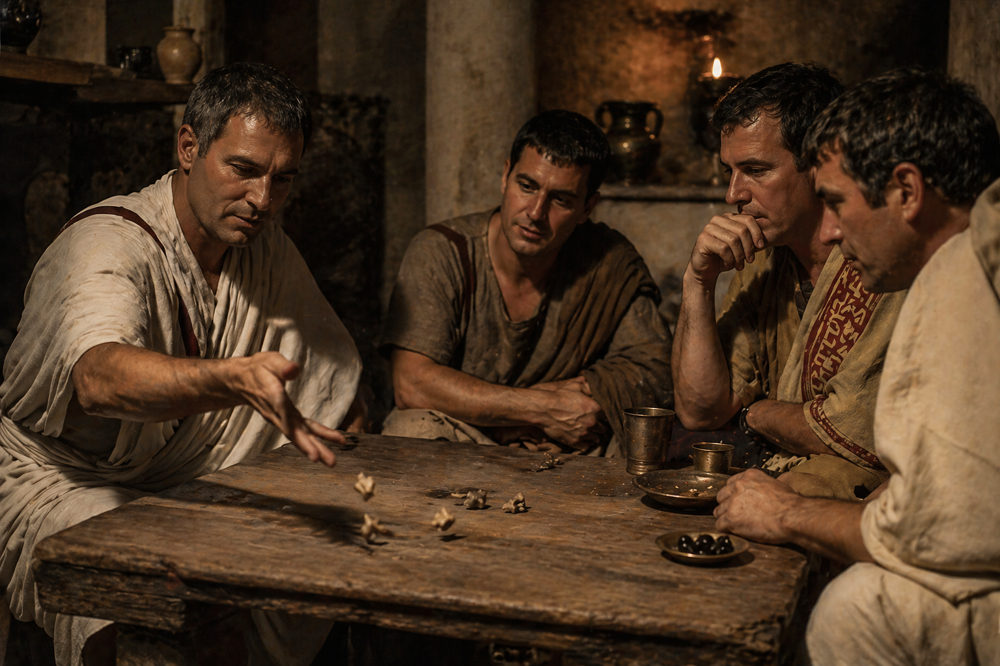
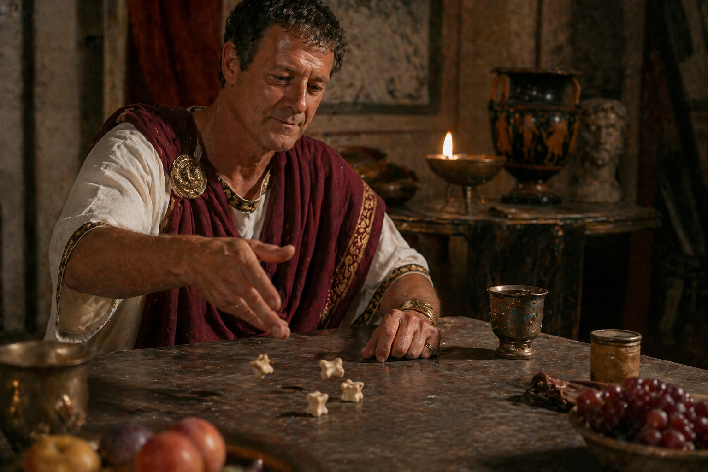
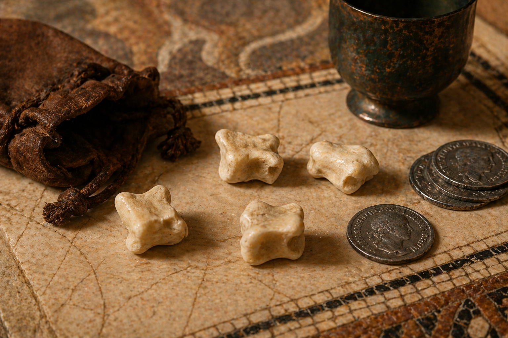
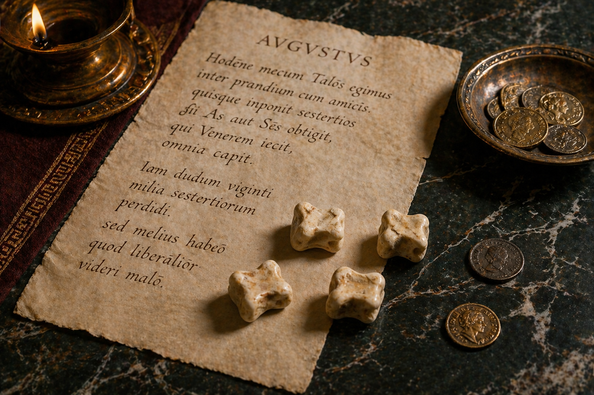
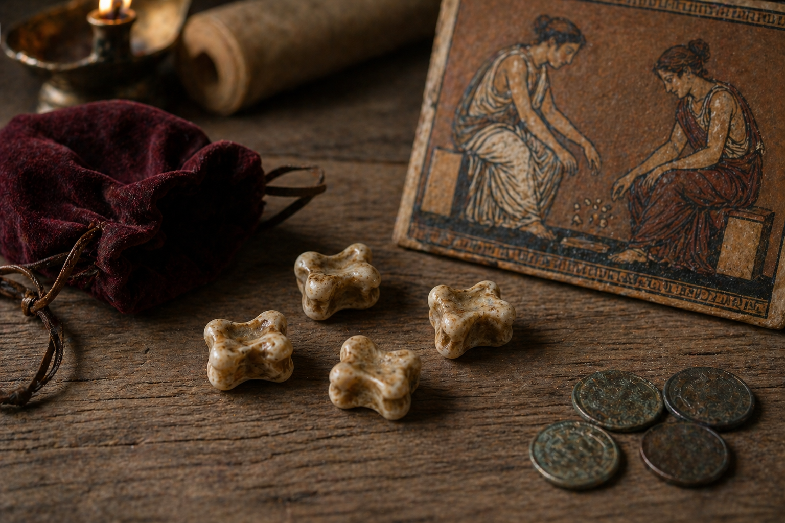
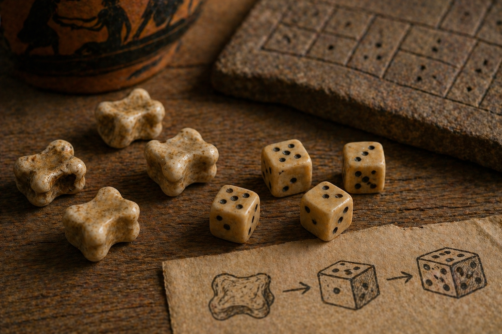

Aquest apartat reuneix fets sorprenents que ajuden a veure les tabes no només com un joc, sinó també com una pràctica social, simbòlica i cultural molt antiga.
01
Quan jugar servia per no morir de gana

Segons Heròdot, els antics lidis van recórrer a jocs com les tabes en un moment de gran fam. Alternaven dies sencers de joc sense menjar amb dies en què sí que s’alimentaven, de manera que el joc actuava com a estratègia de resistència i distracció davant la necessitat extrema.
02
Una manera de parlar amb els déus

A la Grècia i Roma antigues, les tabes no servien només per jugar. També es feien servir per predir el futur en una pràctica coneguda com astragalomància: cada tirada podia interpretar-se com un signe del destí o un missatge d’origen diví.
03
La tirada perfecta: la sort de Venus

Els romans valoraven especialment la tirada de Venus, que consistia a obtenir quatre cares diferents en un sol llançament. Era la combinació més prestigiosa, mentre que la pitjor, amb totes iguals, s’associava al gos. El joc barrejava habilitat, sort i emoció.
04
L’emperador que jugava i perdia diners

Fins i tot August jugava a tabes. En les seves cartes explica que s’hi entretenia durant els àpats i que apostava amb els amics. De vegades reconeix perdre quantitats importants, però ho presentava com un gest de generositat i sociabilitat dins de l’elit romana.
05
No sempre es jugava igual

Grecs i romans no jugaven exactament de la mateixa manera. A Grècia era habitual treballar amb cinc tabes, mentre que a Roma sovint se’n feien servir quatre. També canviaven els noms de les jugades i les combinacions valorades, cosa que mostra com el joc es transformava segons cada cultura.
06
Els avantpassats dels daus

Abans dels daus cúbics tal com els coneixem, les tabes ja funcionaven com un sistema de resultats aleatoris. La seva forma irregular les converteix en un dels primers instruments de joc d’atzar de la història i en un precedent clar de moltes pràctiques posteriors.